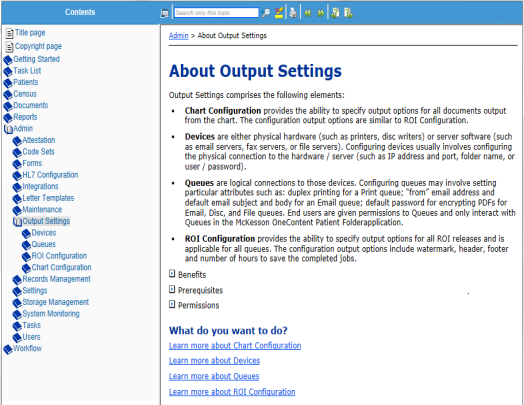

There are numerous administrative functions that must be performed before using the Release of Information (ROI) application.
You can access the online help by doing the following:
| 1. | Launch the ROI application. |
| 2. | On the menu bar, click Help. |
| 3. | From the drop-down list, select ROI Help. |
| 4. | On the left navigation pane, click the Admin bookmark. The bookmark expands and the list of topic displays. |
| 5. | Click on a topic to view specific information. |
The list below includes all the administrative functions. For more details, refer to the Release of Information online help.
Media types
Fee types
Billing templates
Requestor types
Page weight
Delivery methods
Payment methods
Invoice due dates
Billing location
Adjustment reasons
Request reasons
Request status reasons
Document types
Letter templates
Configure notes
Masking
Clinical systems
Configure location
Configure unbillable setting
Numerous settings are configured through the OneContent application.
The list below includes all those functions. They are listed in the order in which they must be completed.
| • | Chart Configuration |
| • | Devices |
| • | Queues |
| • | ROI Configuration |
For more details on these functions, refer to the OneContent online help.
You can access the online help by doing the following:
| 1. | Launch the OneContent application. |
| 2. | On the menu bar, move to the right and click the question mark. |
| 3. | When the system displays the online help, click Admin in the left navigation panel. |
| 4. | Click Output Settings. |
